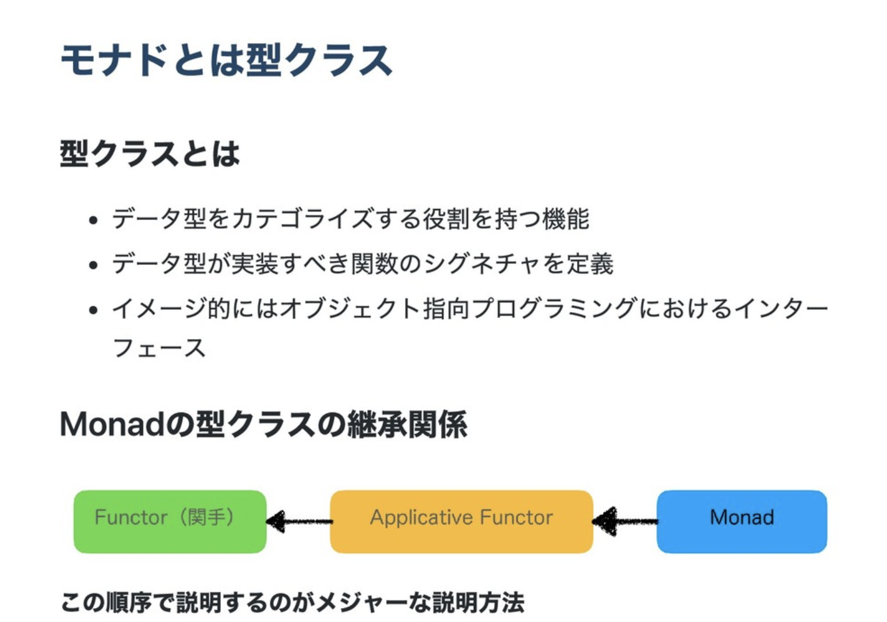
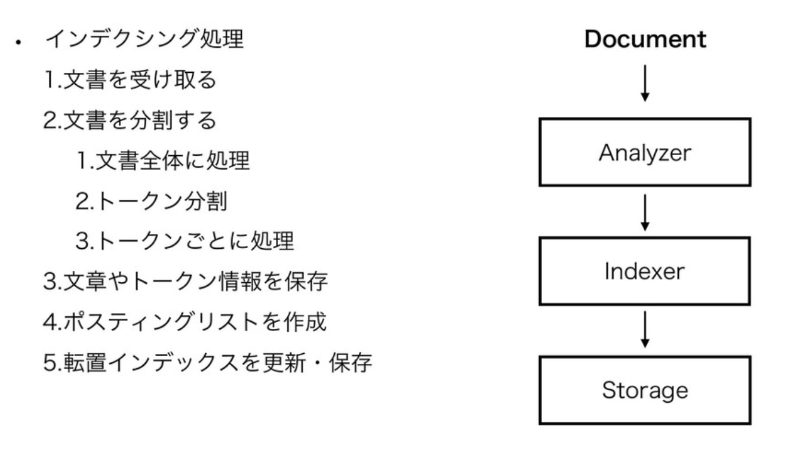
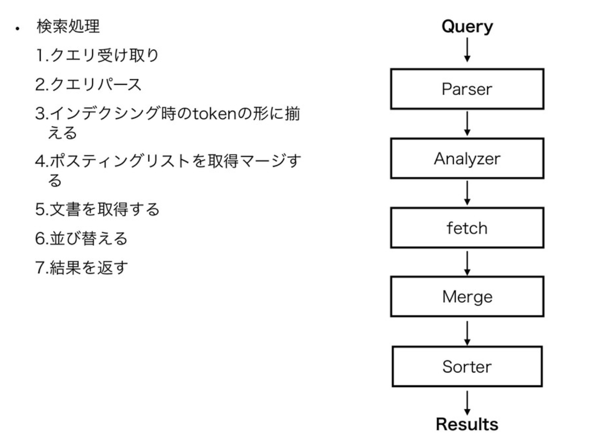

PyCon JP 2019 Day2
PyCon JP 2019 Day2
全体
チェックアウトしないといけなかったので、大きな荷物を持って参加。
そして、時間の都合上、最後までは見れなかった・・
スケジュール
- 10:00 - 11:00 キーノート (大展示ホール1F)
- 11:15 - 12:00 Pythonで始めてみよう関数型プログラミング (コンベンションホール梅4F)
- 12:00 - 13:30 ランチ
- 13:30 - 14:00 Python Website is Slow? Think Again! (A+B会議室1F)
- 14:15 - 14:45 入門 自作検索エンジン (A+B会議室1F)
- 14:45 - 15:45 Coffee Break
- 15:45 - 16:15 Getting Started with Asynchronous Python Web Development (コンベンションホール鶯4F)
- 16:15 - 帰福
内容
キーノート
Maker Movement
DIYの延長としてものづくりを行う人がインターネットで繋がることによって怒ったムーブメント。
なぜ、組み込み系で Python を使うのか
-
エッジAI, ディープラーニングが必要
-
Web技術の活用が用意
-
読みやすい・書きやすい（学習コストが低い）
-
集積回路技術の発達により、構成の・安価なSoCが手に入るようになった
MicroPython
組み込み用に軽量化された Python
Pythonで始めてみよう関数型プログラミング
関数型プログラミング
複数の式を関数の適用によって組み合わせていくプログラミングスタイル。
Python での関数型プログラミングの実現方法
-
標準機能・標準パッケージで実現
-
Pythonを生成するコンパイラで実現
-
AST 変換で実現
MacroPy3 など・・
- 3rd パーティパッケージとして実現
関数合成
２つ以上の関数を合成して、１つの関数として提供する。
Python では、fn.py を使用する。
$ pip3 install fn.py
```python from fn import F, _ from operator import add, mul
# F(f, *args) means partial application # same as functools.partial but returns fn.F instance assert F(add, 1)(10) == 11
# F << F means functions composition, # so (F(f) << g)(x) == f(g(x)) f = F(add, 1) << F(mul, 100) assert list(map(f, [0, 1, 2])) == [1, 101, 201] assert list(map(F() << str << ( ** 2) << ( + 1), range(3))) == ["1", "4", "9"] ```
永続データ構造
list を操作する関数の問題点
- Python の関数は、参照渡しのため、引数で渡したリストを変更すると渡したリストも変更される
```python
from pyrsistent import v, pvector
# No mutation of vectors once created, instead they # are "evolved" leaving the original untouched
v1 = v(1, 2, 3) v2 = v1.append(4) v3 = v2.set(1, 5) v1 pvector([1, 2, 3]) v2 pvector([1, 2, 3, 4]) v3 pvector([1, 5, 3, 4])
# Random access and slicing
v3[1] 5 v3[1:3] pvector([5, 3])
# Iteration
list(x + 1 for x in v3) [2, 6, 4, 5] pvector(2 * x for x in range(3)) pvector([0, 2, 4]) ```
参照透過性
その式をその式の値に置き換えてもプログラムの振る舞いが変わらないこと。
純粋関数
引数を受け取って、戻り値を返す以外の副作用を持たない参照透過な関数のこと。
パターンマッチ
構造を持つデータを分解し、構成要素を取り出す。
構造または分解・取得したデータによって条件分岐を行う。
```python from pampy import match, _
input = [1, 2, 3] pattern = [1, 2, _] action = lambda x: f"it's {x}"
# pattern にマッチした場合に action が実行される match(input, pattern, action) ```
モナド（Monad）
モナドは、Haskell で標準ライブラリとして提供され広まった。

Maybeモナド
Python Website is Slow? Think Again!
なぜ遅いと思われているのか
-
インタプリタ言語
-
GILを使っている
どう改善していくか
- DB へのアクセス回数を調査する
I/O Bounds なのが多いので、これを減らす。
- asincio を使用する
非同期で動作させる。
- Cache, serverless, Use python3 etc...
Python2 -> Python3
レスポンスタイム、CPU使用率共に改善し、安定する。
まとめ
大体のボトルネックは、I/O Bounds だが、もし CPU Bounds だった場合にほか言語を検討すると良い。
入門 自作検索エンジン
全文検索の種類
-
Grep型 線形走査する。
-
牽引（インデックス）型 あらかじめ検索対象となる文章群を走査して牽引データを作っておく。
-
ベクトル型 特徴ベクトルを使ってベクトル間の距離を計算。
検索処理の流れ

